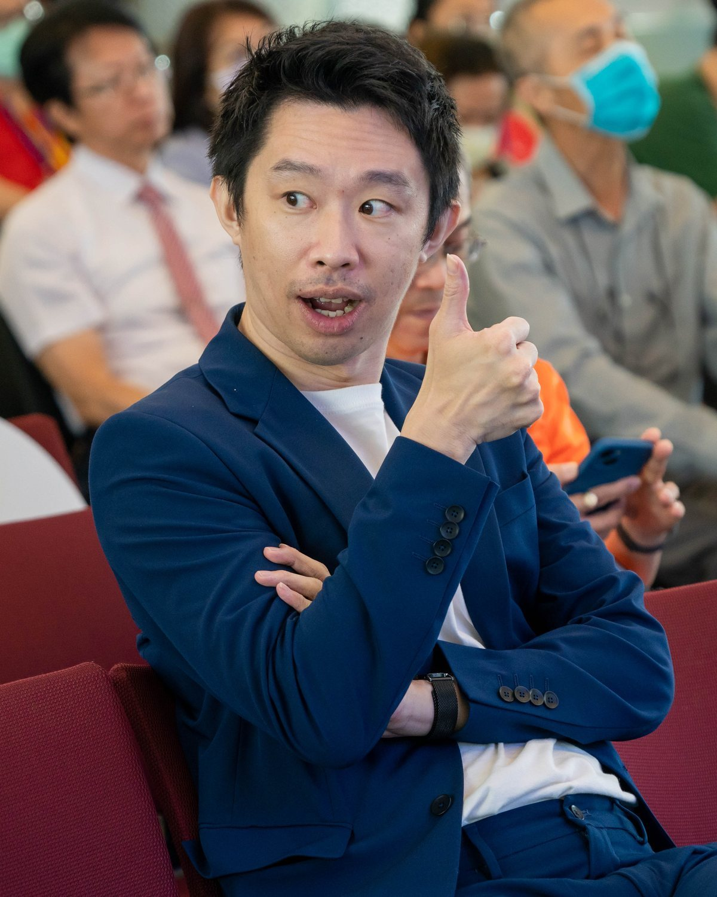

技職議題工作者
黃偉翔
WHANG, WEI-HSIANGSkills for U 國際技能發展協會
創辦人暨執行長

技職領域小小農夫，相信擁有技能的青年，就是改變社會的力量來源。出社會後的第一個五年是記者，第二個五年則是 NPO 工作者，下一個五年是什麼？還不確定，但必定走在推動台灣成為技職大國的路上。
01公共參與
- 總統府技職教育讀書會召集人
- 行政院青年諮詢委員會委員
- 教育部人文社會科學教育諮詢會委員
- 教育部媒體素養教育推動會委員
- 教育部技職教育諮詢會委員
- 新北市技職教育諮詢會委員
- 高雄市技職教育諮詢會委員
02主要榮譽
獎章與表揚
- 呂鳳章先生紀念獎章
- 中華民國第 58 屆十大傑出青年
國際與媒體評選
- 未來教育台灣一百 Top 10
- BeChangeMaker Top 12
- 新世代領袖
計畫資助
- 第 1 屆、第 4 屆青年公益實踐計畫得主
- 第 13 屆、第 15 屆 KEEP WALKING 夢想資助計畫得主
傑出校友
- 國立臺灣科技大學機械工程系傑出校友
- 新北市立新北高工傑出校友
03近期發表
04學歷
- 國立臺灣科技大學機械工程系
- 新北市立新北高工機械科
05代表工作
06聯絡
- Emailceo@skillsforu.org
- LINE3345678
- Facebookmax1218.huang
- Instagram@mrpuppy1218
- Threads@mrpuppy1218